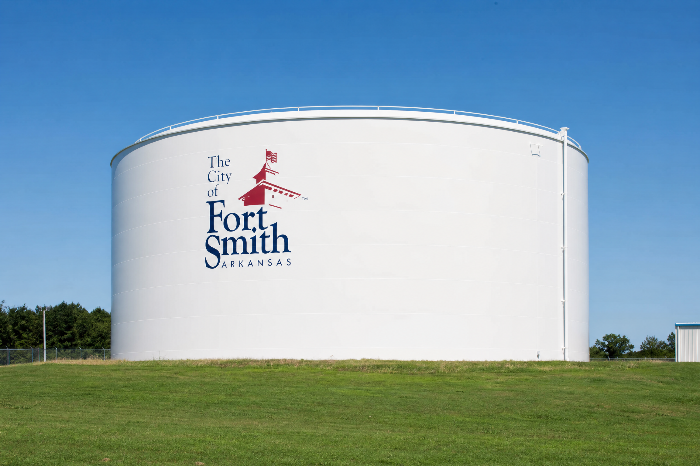

Alma, MI — Water Treatment Plant
JCR Industrial Coatings is currently on-site in Alma, Michigan performing a full rehabilitation of a 500,000-gallon toroellipse elevated water tower. Work includes full containment, structural repairs, abrasive blasting, exterior coating, interior NSF 61-compliant lining, and site restoration.

Past Performance Clients
JCR Industrial Coatings Inc. has completed numerous projects with the following organizations.

American Water
Water tower and storage tank rehabilitation including abrasive blasting, structural repairs, lead abatement, and high-performance coating systems.

Aqua Water
Full-scope coating and rehabilitation services for water storage infrastructure, including surface preparation, containment, and protective coating application.

Birmingham Water Works
Interior and exterior tank rehabilitation with NSF/ANSI 61 certified lining systems, confined space entry protocols, and full QA/QC documentation.
Del-Co Water
Water tower restoration services including structural steel repairs, lead abatement, abrasive blasting, and application of high-performance epoxy and urethane coating systems.